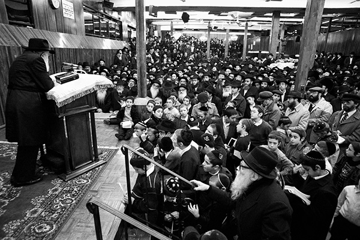

The Power of the Individual
In most of his sichos, the Rebbe Melech HaMoshiach emphasized the power of each individual. However, in the sicha from the 28 th of Nissan 5751, designated by the Rebbe as “the well-known sicha,” it seems that the Rebbe placed a greater prominence upon understanding the unique strength possessed by each one of us individually, even when we are considered a part of the Jewish People as a whole.
By Rabbi Yosef Yitzchak Silverman
, Rosh Mesivta, Yeshivas Tomchei T’mimim, Rishon L’Tziyon
Translated by Michoel Leib Dobry

It was the evening of the 28th of Nissan, 5751. Anash and T’mimim davening Maariv in the Rebbe MH”M’s beis midrash noticed that at the conclusion of the minyan, the Rebbe signaled that he wanted to deliver a sicha. However, they never could have imagined what they were about to hear from the holy lips of the leader of the generation in the next few minutes… The Rebbe approached the podium placed in the corner of the platform, leaned upon it with both his hands, and he began to explain the unique quality of the end of the month of Nissan.
All those who were in the large zal of 770 at that time and listening to the sicha were convinced that this would be another routine sicha for the recent period. In other words, this was another profound and scholarly discourse, integrating precise explanations with practical instructions, and then “they write it out… and afterwards there are diligent Torah scholars who grasp it and remember what was written,” until the following sicha, when they would again be privileged to hear wonders from the Rebbe’s teachings.
ROUTINE SICHOS ON MIRACLES AND WONDERS
In truth, it wouldn’t be correct to describe the Rebbe’s later sichos as “routine.” Only two days earlier, on the evening of the 26th of Nissan, 5751, during a general yechidus for the guests who had come for the Pesach holiday, the Rebbe spoke about the recent miracles that were greater than the miracles of the holiday of Purim. The Rebbe even said that “we shouldn’t be embarrassed to burst out dancing over this, because finally this is the absolute truth – that we see revealed miracles every day.”
Yet, even in that sicha, someone with “a limited intellect” could notice an underlying tone between the lines, as if the Rebbe was expressing dissatisfaction over the delay that took place until the Chassidim digested his holy words about the miracles and the unique time in which we were living.
One can see this in the section of the sicha where the Rebbe seemed to express hope – in continuation of his statement that “we shouldn’t be embarrassed to dance”: “When we explain this to someone who still hasn’t seen it, the explanation will be easily and joyfully accepted without the need for much effort, or even to try and explain twice – rather immediately when the matter arouses him the first time, they simply explain to him what is happening in these times, ‘His striking of the Egyptians with their firstborn, etc.’ – and it will be accepted by him.” (Sichos Kodesh 5751, Vol. 1, unedited)
After the sicha on the evening of the 26th of Nissan, 5751, it seemed that the sicha on the evening of the 28th of Nissan would be a natural continuation. The Rebbe proceeded to dwell upon the meaning of that year, “I will show you wonders,” specifically in that order, i.e., whether it should be “I will show you” before “wonders” (as in the pasuk itself) or the reverse (according to the acronym for 5751). No one could have imagined how the sicha was about to conclude…
Then, the Rebbe’s speaking tone suddenly became agitated and distressed, as he expressed his bewilderment: “How can it be that notwithstanding all these things we have not yet accomplished the coming of Moshiach Tzidkeinu… Is it possible that ten Jews gather together and they don’t devise a plan how to bring Moshiach!?”
Everyone is quite familiar with how things developed. The Rebbe turned the matter over to us: Do everything in your ability to bring Moshiach Tzidkeinu in reality!
An endless flood of words have been uttered in connection with this sicha, its meaning, our role, and our responsibility. There are even those who have cleverly labeled it as “the unanswered sicha,” expressing our obligation to breathe the sicha at every moment, until it receives the long-awaited answer of the hisgalus of the Rebbe, Melech HaMoshiach, immediately, mamash.
FROM ONE TO TEN – THE ENTIRE JEWISH PEOPLE INCLUDED
In this article, we will try to explain a fundamental point in the sicha, shedding light upon the manner in which the Rebbe placed upon us the lofty task of bringing Moshiach in actual deed, and how each of us possesses the strength to carry this out.
During the sicha, the Rebbe repeatedly mentioned the power of individuals to bring the hisgalus of Melech HaMoshiach. However, when we contemplate upon the words the Rebbe used as he transferred this role to us – “Do everything in your ability” – we notice that the Rebbe used several different expressions. At the beginning of the sicha, the Rebbe spoke about “ten Jews,” about “many time tens,” afterwards on “all the children of Israel,” and later on “one, two, three.”
Here are a few brief quotes from the sicha:
“What more can I do so all the children of Israel should create an uproar, cry sincerely, and cause Moshiach to come in reality?”
“When ten (and many times ten) Jews gather together, and in a worthy time with regard to Redemption, and nevertheless, they don’t make an uproar to cause the coming of Moshiach.”
“May it be G-d’s Will that ultimately ten Jews will be found who are obstinate enough to obligate themselves to move G-d.”
“And may it be His Will that there will be found among you one, two, three who will devise a plan on what to do and how to do it.”
Based on what is known about the great precision in the words of the Rebbeim, on the level of “The spirit of G-d spoke in me, and His word was upon my tongue,” it is clear that the Rebbe doesn’t use terms by chance. Therefore, what essentially is the hidden meaning to these various expressions?
In the following lines, we will take a closer look at this sicha, revealing a new foundation in defining the strength of each individual, even when he is part of the community at-large.
AN INDIVIDUAL COMMUNITY OR A COMMUNITY OF INDIVIDUALS
We can apparently find the key to understanding this sicha in another of the Rebbe’s sichos, on the issue of “individual” and “community”: In Likkutei Sichos Vol. 18, the second sicha from Parshas B’Haalos’cha, the Rebbe shlita explains that within the limits of the Pesach sacrifice, there are two concepts: “communal offering” and “individual offering.”
According to the Rogatchover Gaon’s analysis of the term “communal,” this can be explained in two ways: First, it can be said that the community is built upon the ruins of the individual. In other words, the existence of the individual is completely nullified, and one new reality of community is created. This represents a totally different state of being than what we have known thus far.
In line with another interpretation, we can also say the opposite: A community is not one complete entity; rather this is a new entity joining numerous individuals. In other words, not only is this more than one entity; the emphasis here is on the greater number, as in the concept of “The King’s glory is in a multitude of people.” Thus, it is clear that the king’s glory comes specifically when many people come to bestow honor.
After the Rebbe brings these two possibilities, he explains that the latter alternative represents the communal aspect to the Pesach sacrifice – a community comprised of many individuals.
What is the reason that specifically the Korban Pesach embodies the concept of joining the community and the individual? The explanation is quite simple. Since Pesach is the time of the birth of the Jewish nation, this applies when their two corresponding qualities come into expression – “one complete entity” on the one hand, and “each Jewish soul is an entire world” on the other.
Nevertheless, we must make the distinction that the community cannot nullify the existence and relevance of the individual, just as each individual offered the Pesach sacrifice in Egypt, spreading the blood upon the lintel and the two doorposts.
We can also prove this fact from the Rambam’s halachic ruling regarding Gentiles who say, “Give us one of your people and we will kill him, and if not, we will kill all of you.” What is to be done under such circumstances? Logic seemingly dictates that the individual who will be killed in any case must be surrendered. This way, at least the rest will be saved. However, the Rambam rules: “All shall be killed, and they should not give them one Jewish soul.” In other words, it is proper that the community at-large determine the existence of the individual, but it does not have the power to nullify it!
“WHO AM I AND WHAT AM I?”
This paradox also takes expression in the famous saying of Rabbi Hillel in Pirkei Avos: “If I am not for myself, who is for me? And if I am only for myself, what am I? On the one hand, each individual is a separate entity – “I am for myself.” On the other hand, he is also a part of the entire Jewish People (and if not, he is “nothing”) – “what am I?”
Parenthetically speaking, this interpretation joining two essential extremes in the community that sacrifices the Korban Pesach, as reflected in the words of Rabbi Hillel, brings us to a marvelous explanation revealing the connection between the first chapter of Pirkei Avos, where this saying appears, and the time when we customarily begin to learn these chapters, between Pesach and Shavuos. (This is despite the fact, as the Rebbe mentions in Likkutei Sichos, that “it isn’t relevant to say that in the days of Hillel, there was a custom to learn Pirkei Avos between Pesach and Shavuos, but the Torah is eternal…”)
If I am not for myself, who is for me – The Korban Pesach is essentially an individual sacrifice, and everyone must participate in it monetarily.
On the other hand, the aspect of “And if I am only for myself, what am I?” must also be present – it must also have a communal aspect; otherwise it wouldn’t supersede the Shabbos and Hillel wouldn’t have become the nasi. (The Gemara explains that the sons of B’taira didn’t know the Halacha in this matter. It was only when Rabbi Hillel ruled that the Korban Pesach was a communal sacrifice that superseded the Shabbos, that he was appointed as nasi of Israel.)
THE INDIVIDUAL’S POWER OF INFLUENCE OVER THE WHOLE
We can find other examples in Torah regarding the individual’s power of influence over the community:
In Parshas Shmos, the Midrash explains that “when Pharaoh decreed that ‘every male child born will be cast into the river,’ Amram said, ‘Does Israel produce offspring for naught?’ He immediately sent Yocheved away and he divorced his wife. [Subsequently,] all of Israel rose and divorced their wives.”
Thus, we have an example of the influence of the individual – Amram – on the overall community, the entire Jewish People, and they all decided to divorce their wives.
At the beginning of Parshas Korach, Rashi explains why Dassan and Aviram also participated in Korach’s rebellion: “Because the tribe of Reuven was situated southward in their encampment, [and since] Kehos and his sons also encamped to the south, they joined with Korach in his rebellion – ‘Woe to the wicked, woe to his neighbor.’”
Here is yet another example where the individual – Korach – had an influence upon the community, his neighbors, to oppose Moshe Rabbeinu.
In Parshas Pinchas, on the pasuk (BaMidbar 26:64) “And among these there was not a man,” Rashi explains: “But the edict of the spies was not decreed upon the women, since they loved the land. The men said, ‘Let us appoint a leader, and we shall return to Egypt.’ Whereas the women said, ‘Give us an inheritance.’ Therefore, the section on the daughters of Tz’lafchad follows here.”
Again, here we see the influence of individuals over the community. If the daughters of Tz’lafchad were only five women – Machla, Noa, Chogla, Milka, and Tirtza – then why did all the women merit to be saved from the edict of the spies? We find that the daughters of Tz’lafchad influenced other women to love Eretz Yisroel as they did, and therefore they were all exempt from the decree.
DO EVERYTHING IN YOUR ABILITY, AS INDIVIDUALS AND AS A COMMUNITY
We can now draw the conclusion according to everything explained above, that when we speak about a community there are three details:
The existence of the community comprised of a multitude of individuals.
The existence of the individual, whose importance has not been invalidated, continues despite the existence of the community.
The individual has the power to influence the whole community.
This clearly explains the messages concealed in the various expressions the Rebbe used in the sicha from the evening of the 28th of Nissan, 5751:
The Rebbe placed the task of bringing Moshiach upon the entire community. However, the importance and influential power of individuals remains quite in force. Therefore, the Rebbe gives relevance to the activities of individuals who influence the community as a whole. The Rebbe has frequently quoted the words of the Rambam that each person must see things as if “the whole world is in equal balance, and the fulfillment of one mitzvah will bring rescue and salvation to him and [the world].”
Let’s explain this in simple terms: The Rebbe opened the sicha with the expression “ten Jews,” or according to its simple meaning, a “community.” He immediately added in parentheses “and many times ten,” i.e. a community comprised of a multitude of individuals whose existence remains valid. Thus, with each increase to the community, there is added meaning to “The King’s glory is in a multitude of people.”
As the sicha continues, the Rebbe turns to all Jews: “What more can I do so that all the children of Israel should create an uproar, cry sincerely and cause Moshiach to come in reality?” For as was mentioned above, the Jewish People are one complete entity and one community, and there is a quality to communal prayer over individual prayer. It is specifically for this reason that if all Jews would create an uproar and cry out sincerely as a community, Moshiach would come.
After the conclusion of the sicha, there was yet another expression pertaining to the individual: “May it be His will that there will be found among you one, two, three who will devise a plan.” Since the individual has the power to influence the community at large, he should use the strength of the community to create an uproar, cry out, and bring about the coming of Moshiach.
Similarly, we will be able to understand the expression “one, two, three”: There are several ways for an individual to influence the community according to the individual’s unique quality, as in the examples brought above. Amram, as a single individual, still managed to influence the entire Jewish People. The five daughters of Tz’lafchad influenced all the other women.
Thus, in practical terms, the deed is the main thing. We should make full use of the strengths that G-d has given us, both as a community and as individuals, and we should immediately merit to see the results of the individual’s influence over the community as a whole, as we welcome the arrival of the Rebbe, Moshiach Tzidkeinu, mamash, now!
Beis Moshiach (staff). "The Power of the Individual." Beis Moshiach, no. 875 (April 11, 2013).